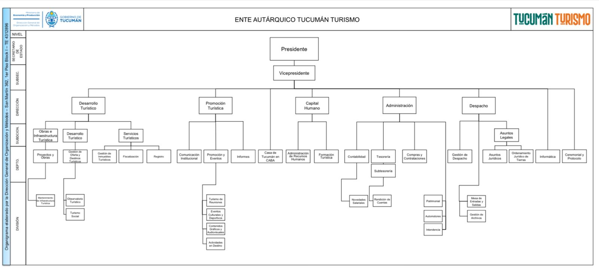

01Misión
Ordenar y promover la actividad turística de la provincia mediante políticas públicas que planifican, programan y promueven el turismo, capacitando a sus actores, protegiendo los recursos turísticos y generando inversiones.
Ente Autárquico Tucumán Turismo · Política de Compensaciones
Una propuesta de compensaciones para el área de Promoción Turística: reconocimiento, capacitación y bienestar, dentro del marco del empleo público.
01Misión
Ordenar y promover la actividad turística de la provincia mediante políticas públicas que planifican, programan y promueven el turismo, capacitando a sus actores, protegiendo los recursos turísticos y generando inversiones.
02Visión
Que Tucumán se consolide como un destino turístico reconocido, competitivo, sostenible y atractivo a nivel nacional e internacional, poniendo en valor sus recursos naturales, culturales, históricos y gastronómicos.
03 · CulturaEn el Ente se trabaja con confianza, buena comunicación y espíritu de equipo. Es una base sólida que queremos potenciar con más desarrollo profesional y bienestar para quienes promueven Tucumán.
04 · ObjetivoPlanificar y promover el desarrollo turístico de Tucumán, para que sea un destino cada vez más elegido, sostenido por personas valoradas, capacitadas y motivadas.
05 · Organigrama
Dos cargos de conducción y cinco direcciones organizan el trabajo del Ente. Esta propuesta se enfoca en el área de Promoción Turística.

06 · Puestos
N.º 1 en jerarquía
Detectar mercados estratégicos para captar más demanda y coordinar la presencia de la Provincia en las principales ferias nacionales e internacionales.
Competencias clave
N.º 3 en jerarquía
Posicionar a la Provincia como sede de eventos y acompañar a las instituciones que organizan congresos, convenciones y ferias en Tucumán.
Competencias clave
N.º 2 en jerarquía
Acompañar fiestas y festivales tradicionales, y armar el calendario anual de eventos culturales y deportivos de la provincia.
Competencias clave
N.º 4 en jerarquía
Diseñar y producir las piezas comunicacionales del Ente: fotos, videos y spots radiales y televisivos.
Competencias clave
07 · Políticas
08 · Capacitación
Objetivo: Desarrollar habilidades para establecer acuerdos de cooperación con otros destinos turísticos, instituciones y organismos, con el propósito de fortalecer la promoción conjunta y ampliar las oportunidades de desarrollo turístico de Tucumán.
Contenidos:
Resultado esperado: Fortalecer los vínculos institucionales y generar nuevas oportunidades de promoción para Tucumán.
Objetivo: Incorporar herramientas de negociación para establecer relaciones comerciales e institucionales con operadores turísticos, agencias de viajes y empresas del sector.
Contenidos:
Resultado esperado: Lograr acuerdos que favorezcan la comercialización y difusión de los destinos turísticos de Tucumán.
Objetivo: Adquirir conocimientos y herramientas para posicionar a Tucumán como destino sede de congresos, reuniones y encuentros nacionales.
Contenidos:
Resultado esperado: Mejorar la capacidad de Tucumán para atraer eventos nacionales y fortalecer el turismo de reuniones.
Objetivo: Desarrollar propuestas de eventos que representen la identidad cultural, las tradiciones y las expresiones deportivas de Tucumán.
Contenidos:
Resultado esperado: Crear eventos que destaquen la identidad tucumana, promuevan la participación de la comunidad y atraigan visitantes.
Objetivo: Incorporar técnicas de fotografía y producción audiovisual mediante drones para generar contenidos innovadores que permitan mostrar los atractivos turísticos de Tucumán desde diferentes perspectivas.
Contenidos:
Resultado esperado: Obtener material audiovisual de calidad para fortalecer la promoción de los destinos turísticos de la provincia.
Objetivo: Aprender a diseñar experiencias turísticas innovadoras que permitan a los visitantes interactuar con los atractivos naturales, culturales e históricos de Tucumán.
Contenidos:
Resultado esperado: Generar nuevas experiencias que enriquezcan la visita de los turistas y diferencien la oferta turística de Tucumán.
Objetivo: Incorporar criterios de sostenibilidad en el diseño y desarrollo de actividades turísticas, promoviendo el cuidado del ambiente y la valoración de los recursos naturales y culturales.
Contenidos:
Resultado esperado: Desarrollar actividades turísticas que favorezcan el cuidado del entorno, la conservación del patrimonio y el desarrollo local.